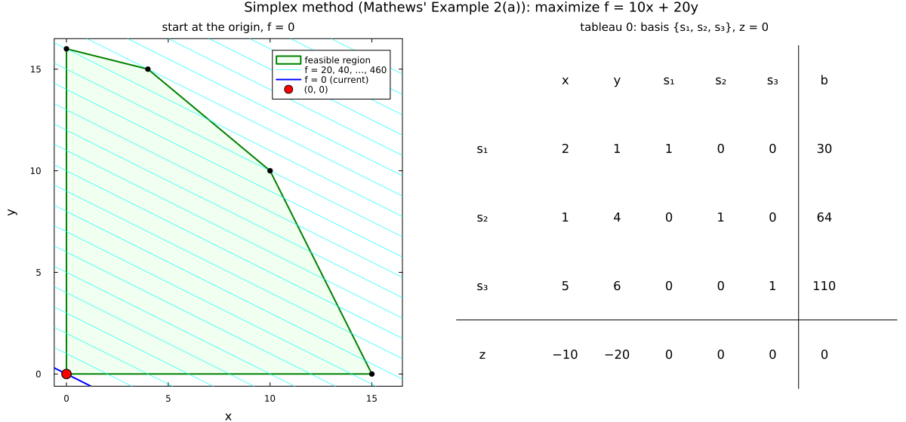
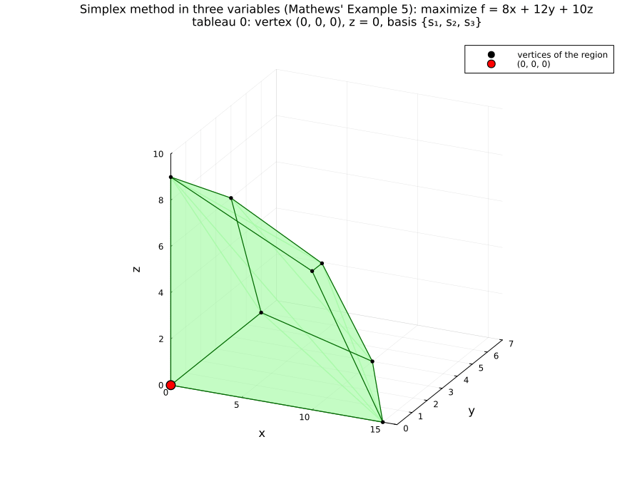

Linear Programming-Simplex Method
Source inspiration: (Mathew 2000-2019).
Description
A linear program asks for the largest (or smallest) value of a linear function \(f(\mathbf{x}) = \mathbf{c}^T\mathbf{x}\) over a region \(\mathcal{R}\) cut out by linear inequalities \(A\mathbf{x} \le \mathbf{b}\), \(\mathbf{x} \ge \mathbf{0}\). The region is an intersection of finitely many half-planes (half-spaces in more variables), which Mathews calls a convex polytope. It can be empty or unbounded, and when it is nonempty and bounded it is a convex polygon in two variables (possibly degenerate, a segment or a point). The level sets \(f = c\) are parallel lines (planes). As \(c\) increases, the level line moves across \(\mathcal{R}\) in the direction of \(\nabla f = \mathbf{c}\), and the last points of \(\mathcal{R}\) it touches are the maxima. That is why a problem whose region is nonempty and bounded always has an optimal vertex, and in two variables it is the graphical method of Example 1.
The simplex method of George Dantzig finds an optimal vertex without listing all the vertices. When \(\mathbf{b} \ge \mathbf{0}\) the origin is a vertex. Slack variables \(\mathbf{s} = \mathbf{b} - A\mathbf{x} \ge \mathbf{0}\) turn the inequalities into equations, and the tableau (5) describes the current vertex: each row has one basic variable, equal to the entry in the right-hand column, the other (nonbasic) variables are \(0\), and the bottom-right entry is the value of \(f\). Each pivot chooses an entering column \(e\) with the most negative entry \(z_e\) of the objective row, and a leaving row \(r\) by the minimum-ratio test
\[ \frac{b_r}{a_{re}} = \min\left\{ \frac{b_i}{a_{ie}} : a_{ie} > 0 \right\}, \]
the farthest the entering variable can grow before a basic variable reaches \(0\). The row operations
\[ R_r \leftarrow \frac{R_r}{a_{re}}, \qquad R_i \leftarrow R_i - a_{ie} R_r \quad (i \ne r) \]
move the solution along an edge of \(\mathcal{R}\) to the next vertex, and \(f\) grows by \((-z_e)\, b_r / a_{re} \ge 0\). It stays the same only when the minimum ratio is \(0\), a degenerate pivot that does not move the point. When no entry of the objective row is negative, the current vertex is optimal.
Animations
The four animations show the geometry behind the tableau. The first sweeps a level line \(f = c\) across the feasible region of Example 1, which is the graphical method. The second runs the simplex method on Example 2 with the tableau beside the region. The third compares the simplex paths of the two objectives of Example 3 on one region, and the fourth follows the simplex path over a polyhedron in three variables (Mathews’ Example 5). In every picture the region is pale green with a green edge. In Cases 2 and 3 the cyan lines are level lines of \(f\), the blue line is the level line through the current point, and the orange line is the path of the simplex method from the origin. Case 1 has the same cyan level lines, but its blue line is the level line through the maximum, and orange marks the part of the level line \(f = c\) inside \(\mathcal{R}\). Case 4 has no level lines, and its orange line is the simplex path. Every pivot is computed in exact rational arithmetic, so every tableau entry, point and value shown is exact.
Mathews’ module links no animation, and his animation archive has none for linear programming, so all four animations are new, with no Mathews original. They follow his static graphs: the pale green region with a green edge, cyan level lines and a blue line through the maximum of Examples 1, 2(a) and 3(a), and the simplex path he draws in yellow over the regions of Examples 2(a), 3(a) and 5, drawn here in orange because yellow barely shows on white. Example 1 has no simplex animation because the origin is not feasible (\(4x + 2y \ge 80\) fails there), so the method as described here cannot start; Mathews solves it graphically, as Case 1 does. Example 2(b) (\(f = 10x + 10y\)), whose solution page has lost its images, is not animated. Neither is Example 4, a three-variable problem whose data are all lost from the archive, nor Example 6, a four-variable problem that Mathews does not draw. Its second pivot is degenerate: the minimum ratio is \(0\), so the point stays at \((0, 100, 0, 0)\) for one pivot before the method reaches the optimum \((96, 44, 44, 16)\), where \(f = 1324\).
Julia source scripts that generated these animations are linked under each case.
Case 1 — Example 1, the level line \(f = c\) swept across \(\mathcal{R}\) for \(f = 15x + 17y\), \(17x + 15y\) and \(16x + 16y\)
Behavior: As \(c\) grows from \(350\) to \(700\), the level line \(f = c\) (dashed) moves parallel to itself in the direction of \(\nabla f\) (the purple arrow). For all three objectives it first meets \(\mathcal{R}\) at the vertex \((16, 8)\), where \(f\) takes its minimum: \(376\), \(392\) and \(384\). It then crosses \(\mathcal{R}\) along a segment (orange) and last touches it at the maximum. That is \((18, 22)\) with \(f = 644\) in (a) and \((24, 16)\) with \(f = 648\) in (b). In (c) the level lines are parallel to the edge \(x + y = 40\), and the last contact is the whole edge from \((18, 22)\) to \((24, 16)\), where \(f = 640\). Past its maximum the level line misses \(\mathcal{R}\), and the blue line stays at the maximum. The values of \(c\) are \(350, 375, \ldots, 700\) together with the six exact extremes, and the animation pauses at each extreme. The window \([0, 25]^2\) and the level lines \(f = 50, 100, \ldots, 700\) are Mathews’. His field of gradient arrows is replaced by a single arrow.

Case 2 — Example 2, the simplex method on the tableau, \(f = 10x + 20y\), path \((0, 0) \to (0, 16) \to (4, 15)\)
Behavior: The left panel shows the region and the right panel the tableau. The method starts at the origin with basis \(\{s_1, s_2, s_3\}\) and \(f = 0\). In pivot 1 the most negative entry of the objective row, \(-20\), chooses \(y\). The ratios \(30\), \(16\) and \(55/3\) choose the row of \(s_2\), and the pivot element is \(4\). As \(y\) grows from \(0\) to \(16\) along the edge \(x = 0\), \(s_2\) falls to \(0\), and the point reaches \((0, 16)\), where \(f = 320\). In pivot 2, \(x\) enters (\(-5\)), the ratios \(8\), \(64\) and \(4\) choose the row of \(s_3\) (pivot element \(7/2\)), and the point moves along the edge \(x + 4y = 64\) to \((4, 15)\), where \(f = 340\). No entry of the objective row is negative there, so \((4, 15)\) is optimal, and the blue level line \(f = 340\) touches the region only at that vertex. The three tableaux are those of Steps 1 to 3 below. The window is Mathews’ \([0, 16.5]^2\), widened by \(0.6\) to the left and below so that points on the axes show in full, and the level lines \(f = 20, 40, \ldots, 460\) are his.

Case 3 — Example 3, one region and two objectives, \(f = 10x + 10y\) and \(f = 10x + 25y\)
Behavior: Both runs start at the origin with all six slack variables basic. In (a) the objective row starts with a tie, \(-10\) for both \(x\) and \(y\). Mathews’ SimplexMethod takes the first column, \(x\), and so does the script. The path is then \((0, 0) \to (18, 0) \to (21, 6) \to (20, 12) \to (17, 17)\), with \(f = 0\), \(180\), \(270\), \(320\) and \(340\): four pivots, of which the last two make \(s_6\) and \(s_5\) basic again after they left in the first two. Taking \(y\) first instead gives the mirror image of this path, also with four pivots, because the region is symmetric about \(y = x\). In (b), \(y\) enters first (\(-25\)) and the path is \((0, 0) \to (0, 18) \to (6, 21) \to (12, 20)\), with \(f = 0\), \(450\), \(585\) and \(620\): three pivots. In both runs \(f\) increases at every pivot, each pivot follows one edge of the octagon to the next vertex, and the run stops at the only vertex the blue level line touches, \((17, 17)\) in (a) and \((12, 20)\) in (b). In (a) the entering variables, the ratios and the vertices are those that Mathews’ SimplexMethod prints. Mathews’ solution page for 3(b) solves \(f = 10x + 15y\) instead (its maximum is \(425\), at \((17, 17)\)), and its graphs are lost. The objective he states, \(f = 10x + 25y\), is used here, as in Example 3(b) below, with level lines every \(40\). The window is Mathews’ \([0, 22]^2\), widened by \(0.6\) to the left and below, and raised to \(26.5\) to make room for the legend.

Case 4 — Mathews’ Example 5, three variables: maximize \(f = 8x + 12y + 10z\) subject to \(6x + 15y + 20z \le 180\), \(6x + 30y + 10z \le 180\), \(12x + 15y + 10z \le 180\), \(x, y, z \ge 0\)
Behavior: The region is a convex polyhedron with \(8\) vertices, \(12\) edges and \(6\) faces, found exactly from the intersections of its bounding planes. The simplex method starts at the origin and makes three pivots. First \(y\) enters (ratios \(12\), \(6\), \(12\)), and the point moves along the \(y\)-axis to \((0, 6, 0)\), where \(f = 72\). Then \(z\) enters (ratios \(6\), \(18\), \(18\)), and the point moves along the edge where \(x = 0\) and \(s_2 = 0\) to \((0, 4, 6)\), where \(f = 108\). Last, \(x\) enters (ratios \(30\), \(30\), \(15/2\)), and the point moves along the edge where \(s_1 = s_2 = 0\) to \((15/2, 3, 9/2)\). All three constraints are tight there, and \(f = 141\) is the maximum. These are the ratios, vertices and values of Mathews’ three iterations, and his picture of this path is the model for this one. The view sways between azimuths \(25^\circ\) and \(45^\circ\) so that the solid reads as three-dimensional. Mathews’ viewpoint and face colours are not used, and the faces are translucent so that the edges behind them stay visible.

Linear Programming Background
Linear programming seeks to optimize a linear objective over a feasible region defined by linear inequalities. In standard maximization form:
\[ \text{maximize } f(\mathbf{x}) = c_1x_1 + c_2x_2 + \cdots + c_nx_n = \mathbf{c}^T\mathbf{x}, \tag{1} \]
subject to
\[ A\mathbf{x} \le \mathbf{b}, \qquad \mathbf{x} \ge \mathbf{0}. \tag{2} \]
The feasible set \[ \mathcal{R} = \{\mathbf{x}\in\mathbb{R}^n : A\mathbf{x} \le \mathbf{b},\ \mathbf{x}\ge \mathbf{0}\} \] is the solution set of finitely many linear inequalities, the rows of \(A\mathbf{x}\le\mathbf{b}\) and the conditions \(x_j \ge 0\), so it is an intersection of finitely many half-spaces. Following Mathews, a convex polytope is any such intersection of a finite set of half-planes (in two dimensions) or half-spaces (in three or more), so \(\mathcal{R}\) is a convex polytope. It may be empty or unbounded. When it is nonempty and bounded, it is a convex polygon in two variables and a convex polyhedron in three, possibly degenerate (of lower dimension, such as a segment or a single point).
If a linear program has an optimal solution and the feasible set is nonempty and bounded, then at least one optimal solution occurs at a vertex (extreme point) of the feasible polytope.
This is why both graphical methods (in 2D) and the simplex method focus on moving among vertices.
Standard Form and Tableau
For constraints of the type \(A\mathbf{x}\le\mathbf{b}\) with \(\mathbf{b}\ge\mathbf{0}\), introduce slack variables \(\mathbf{s}\ge\mathbf{0}\):
\[ A\mathbf{x} + I\mathbf{s} = \mathbf{b}. \tag{3} \]
For a maximization objective \(f(\mathbf{x})=\mathbf{c}^T\mathbf{x}\), the augmented objective equation is
\[ z - \mathbf{c}^T\mathbf{x} = 0. \tag{4} \]
The initial simplex tableau is built from the coefficients of (3) and (4):
\[ \left[ \begin{array}{c|c|c} A & I & \mathbf{b} \\ \hline -\mathbf{c}^T & \mathbf{0}^T & 0 \end{array} \right]. \tag{5} \]
At each iteration:
- Choose the entering variable from the most negative coefficient in the bottom row.
- Choose the leaving row by the minimum-ratio test \(b_i/a_{ij}\) over rows with \(a_{ij}>0\).
- Pivot to make the entering column a unit vector.
- Stop when there are no negative coefficients in the objective row.
Example 1 - Student Work-Hour Optimization
Ann works \(x\) hours and Carl works \(y\) hours per week. The constraints from the source are:
\[ \begin{aligned} 80 &\le 4x+2y,\\ y &\le x+4,\\ x &\le y+8,\\ x+y &\le 40,\\ x &\ge 0,\ y\ge 0. \end{aligned} \]
These are the constraints of Mathews’ Mathematica input, and his vertices and answers come from them. His statement of the problem in words differs: it says that Carl can work at most 6 hours more than Ann and gives the extra constraint \(18 \le x + 2y\). With those constraints the region and the answers change; in 1(a), for example, the maximum would be \(646\) at \((17, 23)\). This page follows Mathews’ computation.
Equivalent form for computation:
\[ \begin{aligned} 2x+y &\ge 40,\\ y &\le x+4,\\ y &\ge x-8,\\ x+y &\le 40,\\ x,y &\ge 0. \end{aligned} \]
The four feasible vertices are obtained by intersecting boundary lines:
\[ (12,16),\ (18,22),\ (24,16),\ (16,8). \]
Example 1(a)
Maximize \[ f(x,y)=15x+17y. \]
Evaluate at vertices:
| Vertex \((x,y)\) | \(15x+17y\) |
|---|---|
| \((12,16)\) | \(452\) |
| \((18,22)\) | \(644\) |
| \((24,16)\) | \(632\) |
| \((16,8)\) | \(376\) |
The maximum is \[ f(18,22)=644. \]
Example 1(b)
Maximize \[ f(x,y)=17x+15y. \]
| Vertex \((x,y)\) | \(17x+15y\) |
|---|---|
| \((12,16)\) | \(444\) |
| \((18,22)\) | \(636\) |
| \((24,16)\) | \(648\) |
| \((16,8)\) | \(392\) |
The maximum is \[ f(24,16)=648. \]
Example 1(c)
Maximize \[ f(x,y)=16x+16y=16(x+y). \]
Since maximizing \(16(x+y)\) is equivalent to maximizing \(x+y\), and the active top boundary is \(x+y=40\), every feasible point on that boundary segment is optimal.
In particular,
\[ f(18,22)=640,\qquad f(24,16)=640. \]
So there are infinitely many optimal points on the segment joining \((18,22)\) and \((24,16)\).
Verification for Example 1(c):
| Point | Constraint check | Objective |
|---|---|---|
| \((18,22)\) | \(80\le 4(18)+2(22)=116\), \(22\le 22\), \(18\le 30\), \(18+22=40\) | \(16(18)+16(22)=640\) |
| \((24,16)\) | \(80\le 4(24)+2(16)=128\), \(16\le 28\), \(24\le 24\), \(24+16=40\) | \(16(24)+16(16)=640\) |
Example 2 - Simplex Tableau Computation
From the source, maximize
\[ f(x,y)=10x+20y \]
subject to
\[ \begin{aligned} 2x+y &\le 30,\\ x+4y &\le 64,\\ 5x+6y &\le 110,\\ x,y &\ge 0. \end{aligned} \]
Introduce slack variables \(s_1,s_2,s_3\ge 0\):
\[ \begin{aligned} 2x+y+s_1 &= 30,\\ x+4y+s_2 &= 64,\\ 5x+6y+s_3 &= 110,\\ z-10x-20y &= 0. \end{aligned} \]
Step 1: Initial Tableau
\[ \begin{array}{c|ccccc|c} & x & y & s_1 & s_2 & s_3 & b \\ \hline R_1 & 2 & 1 & 1 & 0 & 0 & 30 \\ R_2 & 1 & 4 & 0 & 1 & 0 & 64 \\ R_3 & 5 & 6 & 0 & 0 & 1 & 110 \\ \hline R_z & -10 & -20 & 0 & 0 & 0 & 0 \end{array} \]
Entering variable: \(y\) (most negative bottom-row coefficient \(-20\)).
Minimum-ratio test:
\[ \frac{30}{1}=30,\quad \frac{64}{4}=16,\quad \frac{110}{6}=\frac{55}{3}. \]
Leaving row: \(R_2\) (minimum ratio \(16\)). Pivot element: \(4\).
Step 2: First Pivot
After pivoting on row \(2\), column \(y\):
\[ \begin{array}{c|ccccc|c} & x & y & s_1 & s_2 & s_3 & b \\ \hline R_1 & \tfrac{7}{4} & 0 & 1 & -\tfrac14 & 0 & 14 \\ R_2 & \tfrac14 & 1 & 0 & \tfrac14 & 0 & 16 \\ R_3 & \tfrac72 & 0 & 0 & -\tfrac32 & 1 & 14 \\ \hline R_z & -5 & 0 & 0 & 5 & 0 & 320 \end{array} \]
Entering variable: \(x\) (bottom-row coefficient \(-5\)).
Minimum-ratio test (positive \(x\) entries):
\[ \frac{14}{7/4}=8,\quad \frac{16}{1/4}=64,\quad \frac{14}{7/2}=4. \]
Leaving row: \(R_3\). Pivot element: \(\tfrac72\).
Step 3: Second Pivot (Optimal Tableau)
Pivoting on row \(3\), column \(x\) gives:
\[ \begin{array}{c|ccccc|c} & x & y & s_1 & s_2 & s_3 & b \\ \hline R_1 & 0 & 0 & 1 & \tfrac12 & -\tfrac12 & 7 \\ R_2 & 0 & 1 & 0 & \tfrac{5}{14} & -\tfrac{1}{14} & 15 \\ R_3 & 1 & 0 & 0 & -\tfrac37 & \tfrac27 & 4 \\ \hline R_z & 0 & 0 & 0 & \tfrac{20}{7} & \tfrac{10}{7} & 340 \end{array} \]
No negative coefficients remain in the objective row, so this is optimal.
The solution is
\[ x_1=x=4,\qquad x_2=y=15,\qquad z_{\max}=340. \]
Verification:
| Constraint | Left-hand side at \((4,15)\) | Right-hand side |
|---|---|---|
| \(2x+y\le 30\) | \(2(4)+15=23\) | \(\le 30\) \(\checkmark\) |
| \(x+4y\le 64\) | \(4+4(15)=64\) | \(\le 64\) \(\checkmark\) |
| \(5x+6y\le 110\) | \(5(4)+6(15)=110\) | \(\le 110\) \(\checkmark\) |
Objective check:
\[ f(4,15)=10(4)+20(15)=340. \]
Example 3 - Same Feasible Region, Different Objectives
From the source, the feasible region is defined by
\[ \begin{aligned} -x+2y &\le 36,\\ x+6y &\le 132,\\ 3x+5y &\le 136,\\ 5x+3y &\le 136,\\ 6x+y &\le 132,\\ 2x-y &\le 36,\\ x &\ge 0,\ y\ge 0. \end{aligned} \]
The feasible vertices are
\[ (0,0),\ (0,18),\ (6,21),\ (12,20),\ (17,17),\ (20,12),\ (21,6),\ (18,0). \]
Example 3(a)
Maximize \[ f(x,y)=10x+10y. \]
| Vertex \((x,y)\) | \(10x+10y\) |
|---|---|
| \((0,0)\) | \(0\) |
| \((0,18)\) | \(180\) |
| \((6,21)\) | \(270\) |
| \((12,20)\) | \(320\) |
| \((17,17)\) | \(340\) |
| \((20,12)\) | \(320\) |
| \((21,6)\) | \(270\) |
| \((18,0)\) | \(180\) |
So the maximum is \[ f(17,17)=340. \]
Example 3(b)
Maximize \[ f(x,y)=10x+25y. \]
This is the objective in Mathews’ statement of the example. His solution page solves \(f = 10x + 15y\) instead, whose maximum is \(425\) at \((17, 17)\).
| Vertex \((x,y)\) | \(10x+25y\) |
|---|---|
| \((0,0)\) | \(0\) |
| \((0,18)\) | \(450\) |
| \((6,21)\) | \(585\) |
| \((12,20)\) | \(620\) |
| \((17,17)\) | \(595\) |
| \((20,12)\) | \(500\) |
| \((21,6)\) | \(360\) |
| \((18,0)\) | \(180\) |
So the maximum is \[ f(12,20)=620. \]
Verification of the two optimal points:
| Point | Active/tight constraints | Objective value |
|---|---|---|
| \((17,17)\) for 3(a) | \(3x+5y=136\), \(5x+3y=136\) | \(10(17)+10(17)=340\) |
| \((12,20)\) for 3(b) | \(x+6y=132\), \(3x+5y=136\) | \(10(12)+25(20)=620\) |